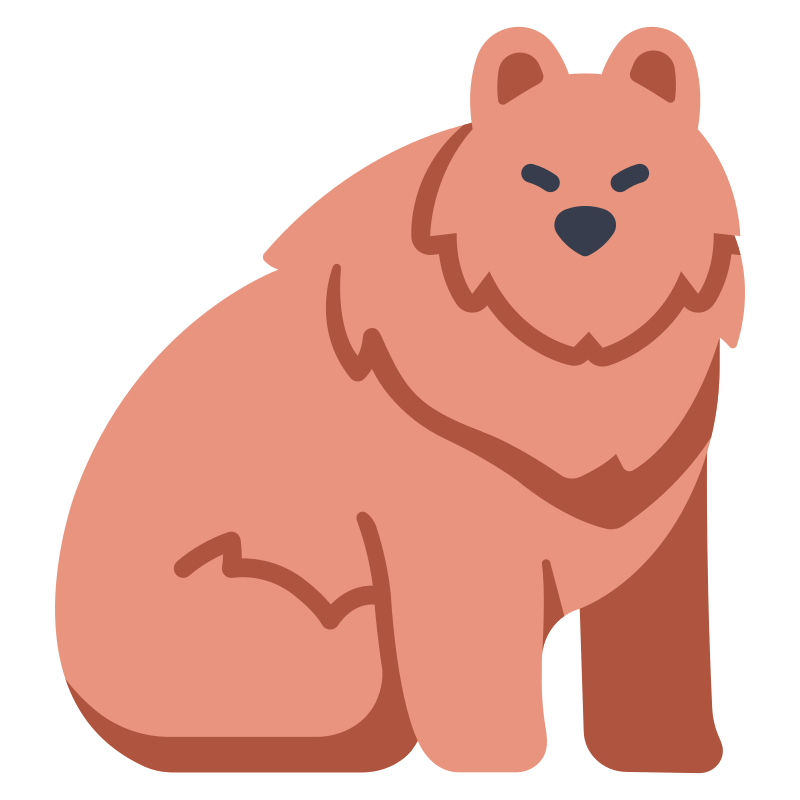
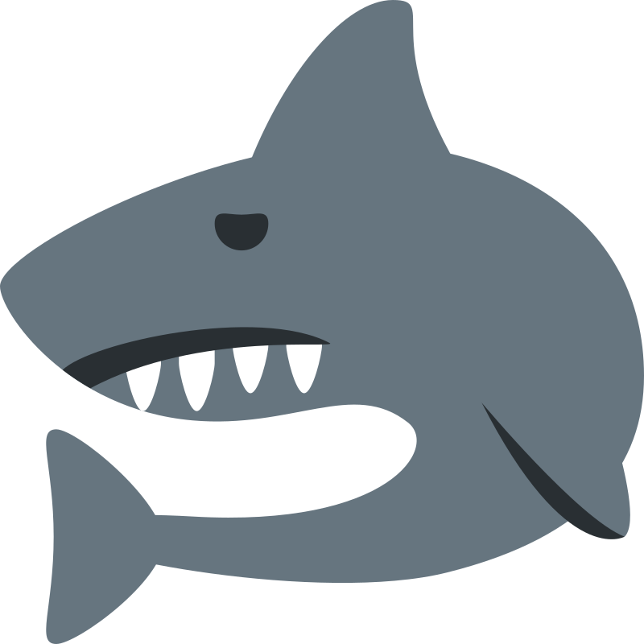

Oso

El oso es un mamífero de gran tamaño que habita en diferentes regiones del mundo. Es omnívoro, tiene un excelente sentido del olfato y puede vivir en bosques, montañas y zonas frías.
- Peso : Entre 90 y 360 kg, aproximadamente.
- Longitud : entre 1,8 y 2,2 metros en muchos ejemplares adultos.
- Princiales fuentes de alimentacion : frutos, raíces, plantas, insectos, peces y pequeños mamíferos.
- Esperanza de vida: alrededor de 20 a 25 años en estado salvaje.
Leon
El león es un mamífero carnívoro conocido como el rey de la selva. Habita principalmente en África, vive en grupos llamados manadas y se alimenta de otros animales para sobrevivir.
- Peso : entre 150 y 250 kg en los machos adultos.
- Longitud : hasta 3 metros, incluyendo la cola.
- Princiales fuentes de alimentacion : cebras, antílopes, ñus y otros mamíferos.
- Esperanza de vida : aproximadamente 10 a 16 años en estado salvaje.
Tiburon

El tiburón es un pez marino que se caracteriza por su cuerpo fuerte, sus aletas y sus múltiples filas de dientes. Habita en distintos océanos y cumple una función importante en el equilibrio de los ecosistemas marinos.
- Peso : puede alcanzar aproximadamente 2.000 kg.
- Longitud : hasta 6,4 metros aproximadamente.
- Princiales fuentes de alimentacion : peces, rayas, focas y leones marinos.
- Esperanza de vida : más de 70 años.